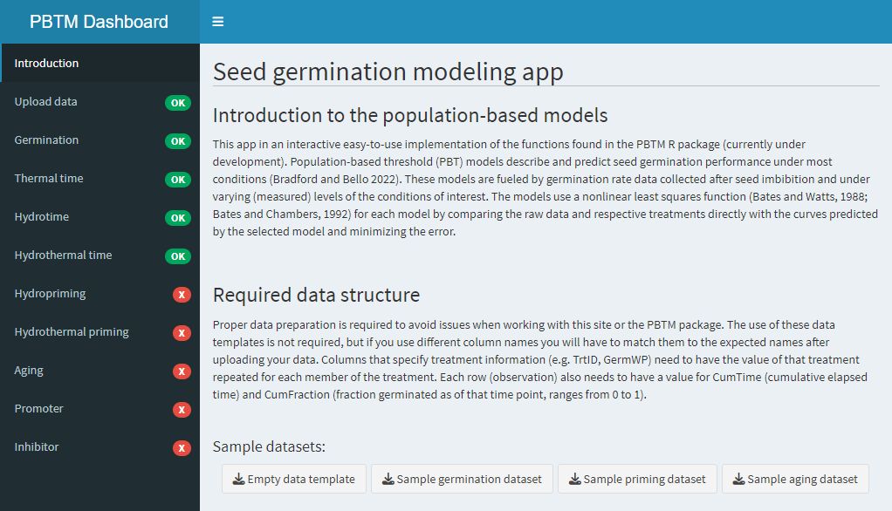

About the app
Population-based threshold (PBT) models describe a population as a normal distribution of individual sensitivity thresholds to some factor, such as temperature, water, or a hormone. As the factor level increases, more individuals have their thresholds exceeded and are recruited to respond, and each responds faster in proportion to how far the factor level exceeds its threshold. The result is a family of time courses whose shapes reveal the underlying threshold distribution (its mean and standard deviation) and a time constant that sets the speed of response.
The app fits these models to dose-response time-course data using nonlinear least squares, analyzing all factor levels at once to find the common population parameters. Those parameters can then be used to predict the population’s response to any factor level or to compare treatments. Seed germination is the original and main use case, but the same approach applies wherever individuals vary in their sensitivity, from molecules and cells to organisms and ecosystems.

Getting started
Pick one of the built-in sample datasets, or upload your own data as an
Excel file. A template with the expected column headings can be
downloaded from the Upload Data tab. At a minimum, each row needs a
cumulative elapsed time (CumTime) and the cumulative
fraction germinated at that time (CumFraction, from 0 to
1). Treatment columns such as temperature (GermTemp) or
water potential (GermWP) should repeat the treatment value
on every row belonging to that treatment. You can use your own column
names and match them to the expected ones after uploading.
Once your data is loaded, a green check appears next to each model that can be applied to it. Most models let you choose which treatment levels to include, filter out other treatments, and use “cleaned” data that drops time points where germination didn’t increase. You can also hold some parameters fixed to see how the others change the predicted time courses.
Available models
In the equations below, tg is the time to germination of fraction g of the population, and terms marked (g) vary across the population in a normal distribution with standard deviation σ.
Germination
A first look at your data: plots germination time courses by treatment and calculates the times to 10, 16, 50, 84 and 90% germination (or their inverses, germination rates). The 16% and 84% values are one standard deviation either side of the median.
Thermal time
θT(g) = (T − Tb) tg
For germination at several temperatures. Estimates the base temperature Tb (the minimum for germination), the thermal time constant θT(50) and its standard deviation.
Hydrotime
θH = (ψ − ψb(g)) tg
For germination at several water potentials. Estimates the hydrotime constant θH, the median base water potential ψb(50) and the spread of base water potentials across the seed population.
Hydrothermal time
θHT = (ψ − ψb(g))(T − Tb) tg
Combines the two above for data that vary in both temperature and water potential, estimating a single hydrothermal time constant along with ψb(50), σ and Tb.
Hydropriming time
GR50 = GRi + (ψP − ψmin) tP / θHP
Priming hydrates seeds to just below the level needed to germinate, then dries them, which speeds up and synchronizes later germination. This model relates the gain in median germination rate to the priming water potential and duration, so you can pick a priming treatment that gives the best effect.
Hydrothermal priming time
GR50 = GRi + (ψP − ψmin)(TP − Tmin) tP / θHTP
Extends hydropriming time to include priming temperature. Different combinations of temperature, water potential and duration that add up to the same hydrothermal priming time give similar results, so you can choose whichever is most convenient or economical.
Aging time
θage = (pmax(g) − p) tg
As seeds age, germination slows before viability starts to drop. This model uses those early delays to predict the later decline in viability from the distribution of maximum seed lifetimes pmax(g), using germination tests on seeds stored for relatively short periods.
Promoters
θGA = (log[GA] − log[GAb(g)]) tg
For factors that promote germination, such as the hormone gibberellin (GA). Estimates the promoter time constant, the median base concentration Pb(50) and its standard deviation. Doses can be linear or logarithmic.
Inhibitors
θABA = (log[ABAb(g)] − log[ABA]) tg
For factors that inhibit germination, such as the hormone abscisic acid (ABA). Estimates the inhibitor time constant, the median base concentration Ib(50) and its standard deviation. Doses can be linear or logarithmic.
Subpopulations
Seed lots are often blends of lots produced in different places or conditions, so their germination doesn't follow a single normal distribution. This model fits the total population as a mixture of subpopulations, each with its own PBT parameters and share of the total, to unpick complex germination patterns.